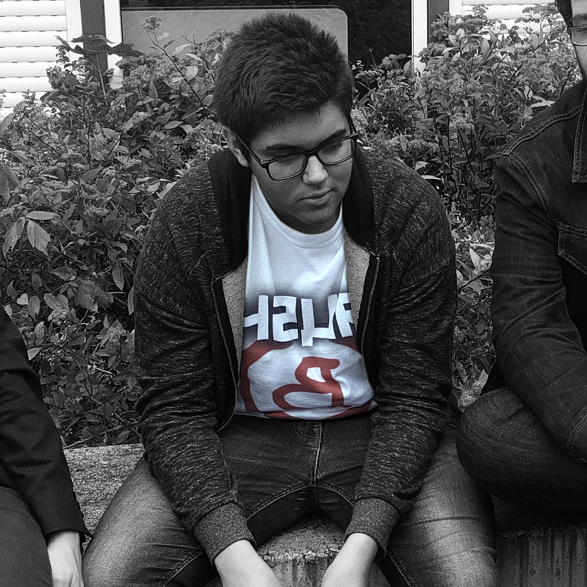

|  |
"Vous cachez ne fait que retarder votre élimination."Le sniperJocelyn Bridon de son vrai nom, est un homme à l'AIM parfait. Il a un taux de précision de 96% en moyenne. Il fait ses armes sur Minecraft étant jeune, et commencera Counter Strike : Global Offensive à l'age de 11 ans, il deviendra en 3 mois et 4 jours le 500ème meilleur joueur mondial. Il lui faudra attendre 12 ans pour devenir le numéro 1. Il joue aujourd'hui à Overwatch, Fortnite et vise la Overwatch League. |
Récompenses
|
Spécialités
|